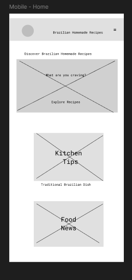
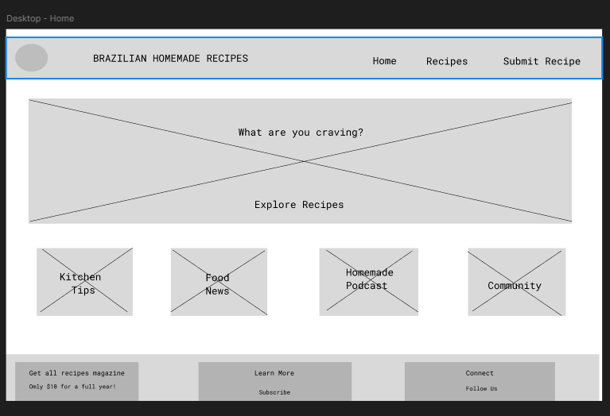

Site Name
Brazilian Homemade Recipes
This name was selected because it represents a website dedicated to sharing traditional Brazilian homemade recipes. It is simple, descriptive, and easy for visitors to understand.
Site Purpose
The purpose of this website is to share traditional Brazilian homemade recipes with people who enjoy cooking and discovering Brazilian food. Visitors will find ingredients, preparation instructions, cooking information, and the opportunity to submit their own recipes.
Scenarios
- How can I prepare traditional Brazilian dishes using simple and affordable ingredients?
- Where can I find the ingredients and step-by-step instructions for Brazilian recipes?
- Can I share my own homemade Brazilian recipe with other visitors?
- How long does it take to prepare each recipe?
Color Scheme
Forest Green (#315C42): Main headings, navigation, and buttons.
Warm Cream (#F4EBDD): Main background and content sections.
Golden Yellow (#D9A441): Accents, highlights, and decorative details.
Dark Charcoal (#292929): Paragraphs and general text.
Typography
Lora
Lora will be used for headings and section titles. It gives the website a traditional and welcoming appearance.
Open Sans
Open Sans will be used for paragraphs, navigation, buttons, and forms because it is easy to read.
Wireframe
The following wireframes will represent the home page layout on small and large screens. They will be created as black-and-white sketches.
Small Viewport (Mobile)

Large Viewport (Desktop)
